Lesespur: Der Zukunftstag – Lesespurgeschichte mit Rätseln (Klasse 8)

Lesespur: Die Bank – Lesespurgeschichte mit Rätseln (Klasse 8)
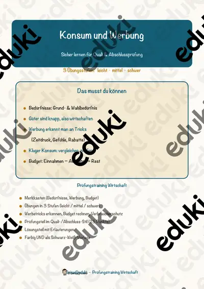
Konsum und Werbung – Prüfungstraining Wirtschaft (Klasse 8)

Modellunternehmen für den BwR-Unterricht – Arbeitsheft mit Lösungen (BwR 8, Realschule Bayern)

Systematik der Geschäftsbuchführung – Arbeitsheft mit Lösungen (BwR 8, Realschule Bayern)
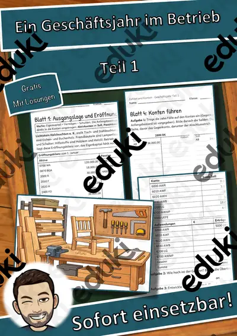
Ein Geschäftsjahr im Fertigungsunternehmen – Übungsreihe Teil 1 – Arbeitsheft mit Lösungen (BwR 8)

Gebote und Verbote: Rechte und Pflichten im Alltag – Arbeitsheft mit Lösungen (WR 8/9, Realschule)
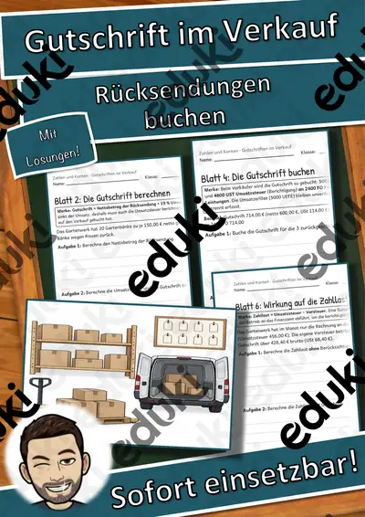
Gutschrift im Verkauf: Rücksendungen buchen – Arbeitsheft mit Lösungen (BwR 8, Realschule Bayern)

Bank und Geldanlage: das Bankensystem – Arbeitsheft mit Lösungen (WR 8/9, Realschule Bayern)
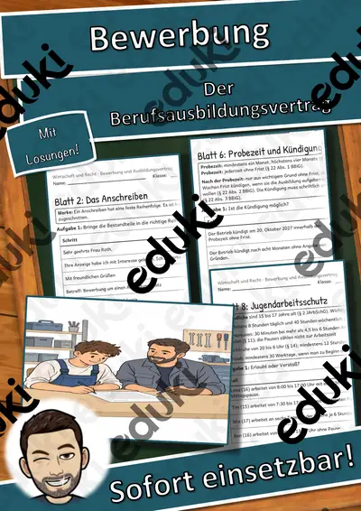
Bewerbung: der Berufsausbildungsvertrag – Arbeitsheft mit Lösungen (WR 8/9, Realschule Bayern)

Markt und Preis: Preisbildung und Marktformen – Arbeitsheft mit Lösungen (WR 8/9, Realschule Bayern)
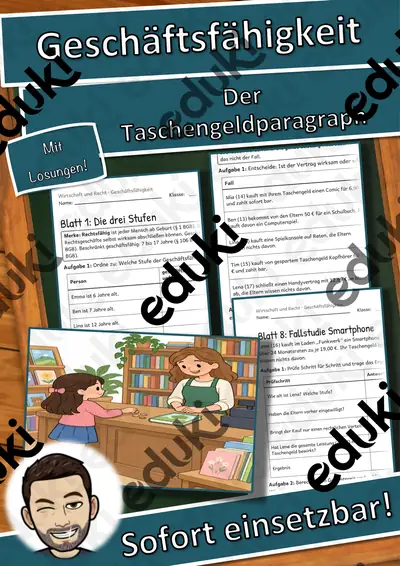
Geschäftsfähigkeit: der Taschengeldparagraph – Arbeitsheft mit Lösungen (WR 8/9, Realschule Bayern)

Der Kaufvertrag: Abschluss und Erfüllung – Arbeitsheft mit Lösungen (WR 8/9, Realschule Bayern)

Abgaben an den Staat – Arbeitsheft mit Lösungen (BwR 8, Realschule Bayern)

Personal: Beschaffung, Lohn und Gehalt – Arbeitsheft mit Lösungen (BwR 8, Realschule Bayern)

Die optimale Bestellmenge – Arbeitsheft mit Lösungen (BwR 8, Realschule Bayern)

Marketing: Kommunikations- und Vertriebspolitik – Arbeitsheft mit Lösungen (BwR 8, Realschule)
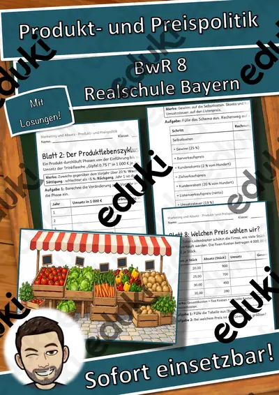
Produkt- und Preispolitik – Arbeitsheft mit Lösungen (BwR 8, Realschule Bayern)

Rücksendung und Gutschrift: Buchen bei Sachmangel – Arbeitsheft mit Lösungen (BwR 8, Realschule)
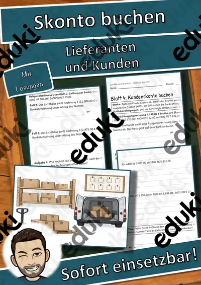
Skonto buchen: Lieferanten und Kunden – Arbeitsheft mit Lösungen (BwR 8, Realschule Bayern)

Verkäufe buchen: Umsatzsteuer und Zahllast – Arbeitsheft mit Lösungen (BwR 8, Realschule Bayern)

Angebote vergleichen: Einkaufskalkulation – Arbeitsheft mit Lösungen (BwR 8, Realschule Bayern)

Rohstoffe einkaufen: Bezugskosten und Rabatt – Arbeitsheft mit Lösungen (BwR 8, Realschule Bayern)

Jahresabschluss – Arbeitsheft mit Lösungen (BwR 8, Realschule Bayern)
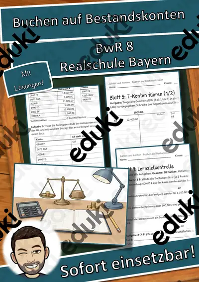
Buchen auf Bestandskonten – Arbeitsheft mit Lösungen (BwR 8, Realschule Bayern)

Jugendarbeitsschutz: Arbeitszeit, Pausen und Urlaub – Arbeitsheft mit Lösungen (WR 8/9, Realschule)

Kaufentscheidungen treffen: Bedarf, Vergleich, Reue – Arbeitsheft mit Lösungen (WR 8/9, Realschule)

Marketingstrategien: Zielgruppen und Marktauftritt – Arbeitsheft mit Lösungen (WR 8/9, Realschule)

Kurse an der Börse – Arbeitsheft mit Lösungen (WR 8/9, Realschule Bayern)

Die Börse: Geschichte, Ablauf und Indizes – Arbeitsheft mit Lösungen (WR 8/9, Realschule Bayern)
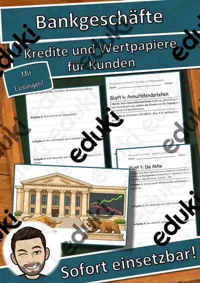
Bankgeschäfte: Kredite und Wertpapiere für Kunden – Arbeitsheft mit Lösungen (WR 8/9, Realschule)

Bankgeschäfte für Kunden – Arbeitsheft mit Lösungen (WR 8/9, Realschule Bayern)
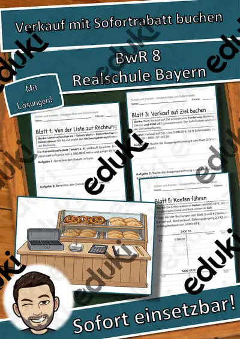
Verkauf mit Sofortrabatt buchen – Arbeitsheft mit Lösungen (BwR 8, Realschule Bayern)
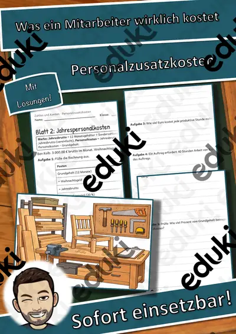
Was ein Mitarbeiter wirklich kostet – Arbeitsheft mit Lösungen (BwR 8, Realschule Bayern)

Der Kontenplan: Ordnung im Rechnungswesen – Arbeitsheft mit Lösungen (BwR 8, Realschule Bayern)
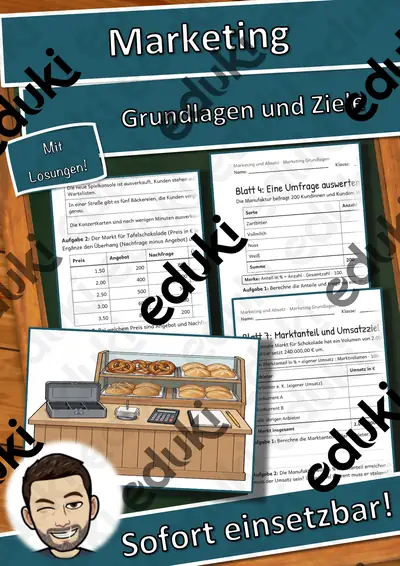
Marketing: Grundlagen und Ziele – Arbeitsheft mit Lösungen (BwR 8, Realschule Bayern)

Werkstoffverbrauch buchen – Arbeitsheft mit Lösungen (BwR 8, Realschule Bayern)
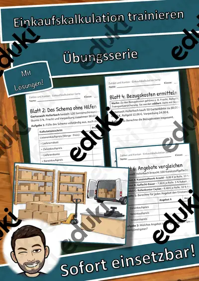
Einkaufskalkulation trainieren: Übungsserie – Arbeitsheft mit Lösungen (BwR 8, Realschule Bayern)
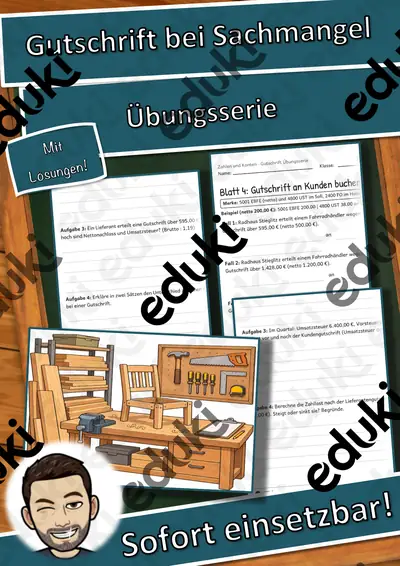
Gutschrift bei Sachmangel: Übungsserie – Arbeitsheft mit Lösungen (BwR 8, Realschule Bayern)
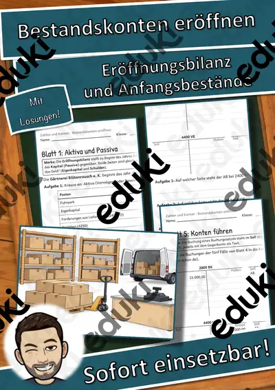
Bestandskonten eröffnen – Arbeitsheft mit Lösungen (BwR 8, Realschule Bayern)
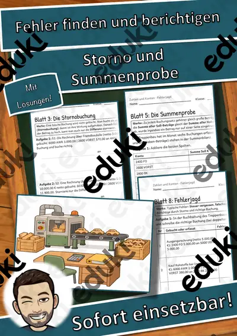
Fehler finden und berichtigen: Storno und Summenprobe – Arbeitsheft mit Lösungen (BwR 8, Realschule)
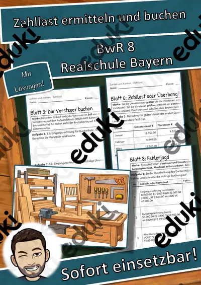
Zahllast ermitteln und buchen – Arbeitsheft mit Lösungen (BwR 8, Realschule Bayern)
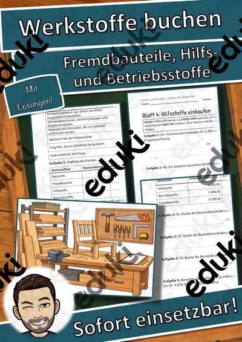
Werkstoffe buchen – Arbeitsheft mit Lösungen (BwR 8, Realschule Bayern)

Rabatt und Bonus buchen: Einkauf und Verkauf – Arbeitsheft mit Lösungen (BwR 8, Realschule Bayern)
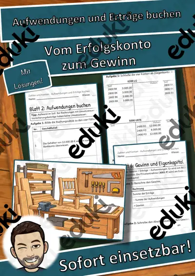
Aufwendungen und Erträge buchen – Arbeitsheft mit Lösungen (BwR 8, Realschule Bayern)
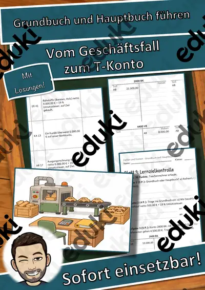
Grundbuch und Hauptbuch führen – Arbeitsheft mit Lösungen (BwR 8, Realschule Bayern)
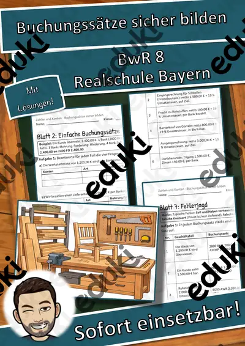
Buchungssätze sicher bilden – Arbeitsheft mit Lösungen (BwR 8, Realschule Bayern)

Belege lesen und kontieren – Arbeitsheft mit Lösungen (BwR 8, Realschule Bayern)
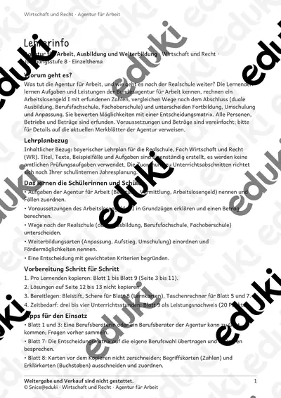
Agentur für Arbeit – Arbeitsheft mit Lösungen (WR 8, Realschule Bayern)

Arbeit und Arbeitsmarkt – Arbeitsheft mit Lösungen (WR 8, Realschule Bayern)

Streit vor Gericht oder davor – Arbeitsheft mit Lösungen (WR 8, Realschule Bayern)

Kaufvertrag in der Krise – Arbeitsheft mit Lösungen (WR 8, Realschule Bayern)

Eigentum und Besitz: auch geistiges Eigentum – Arbeitsheft mit Lösungen (WR 8, Realschule Bayern)

Rechtsfähigkeit: Strafmündigkeit und Jugendschutz – Arbeitsheft mit Lösungen (WR 8, Realschule)

Recht verstehen – Arbeitsheft mit Lösungen (WR 8, Realschule Bayern)
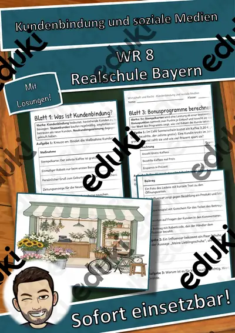
Kundenbindung und soziale Medien – Arbeitsheft mit Lösungen (WR 8, Realschule Bayern)

Verbraucher online – Arbeitsheft mit Lösungen (WR 8, Realschule Bayern)

Klug kaufen im Netz – Arbeitsheft mit Lösungen (WR 8, Realschule Bayern)

Wirtschaften im Alltag – Arbeitsheft mit Lösungen (WR 8, Realschule Bayern)

Verkaufspreis: kalkulieren und buchen – Arbeitsheft mit Lösungen (BwR 8, Realschule Bayern)

Unterkonten abschließen: Bezugskosten und Nachlässe – Arbeitsheft mit Lösungen (BwR 8, Realschule)
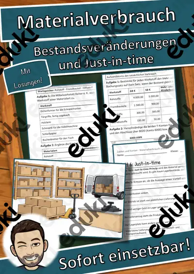
Materialverbrauch – Arbeitsheft mit Lösungen (BwR 8, Realschule Bayern)
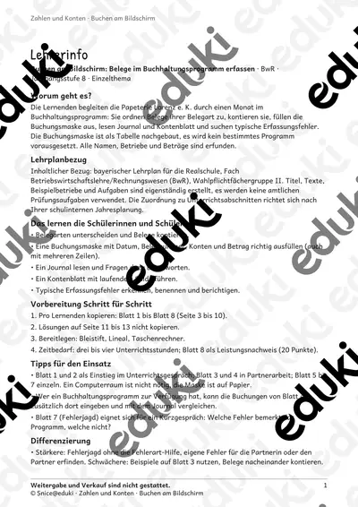
Buchen am Bildschirm – Arbeitsheft mit Lösungen (BwR 8, Realschule Bayern)

Der Jahresverlauf im Unternehmen – Arbeitsheft mit Lösungen (BwR 8, Realschule Bayern)
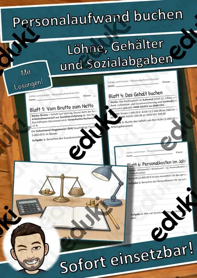
Personalaufwand buchen – Arbeitsheft mit Lösungen (BwR 8, Realschule Bayern)
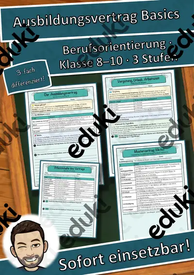
Ausbildungsvertrag Basics – Bewerbung & Praktikum, 3 Stufen, mit Hilfen & Lösungen (Klasse 7–10)

Verhalten im Betrieb – Bewerbung & Praktikum, 3 Stufen, mit Hilfen & Lösungen (Klasse 7–10)

Arbeitsschutz & Jugendarbeitsschutzgesetz – Bewerbung & Praktikum, 3 Stufen, mit Hilfen & Lösungen (Klasse 7–10)

Vizekanzler und Bundesminister der Finanzen - Lars Klingbeil
Keine Materialien gefunden – versuch einen anderen Suchbegriff oder Filter.